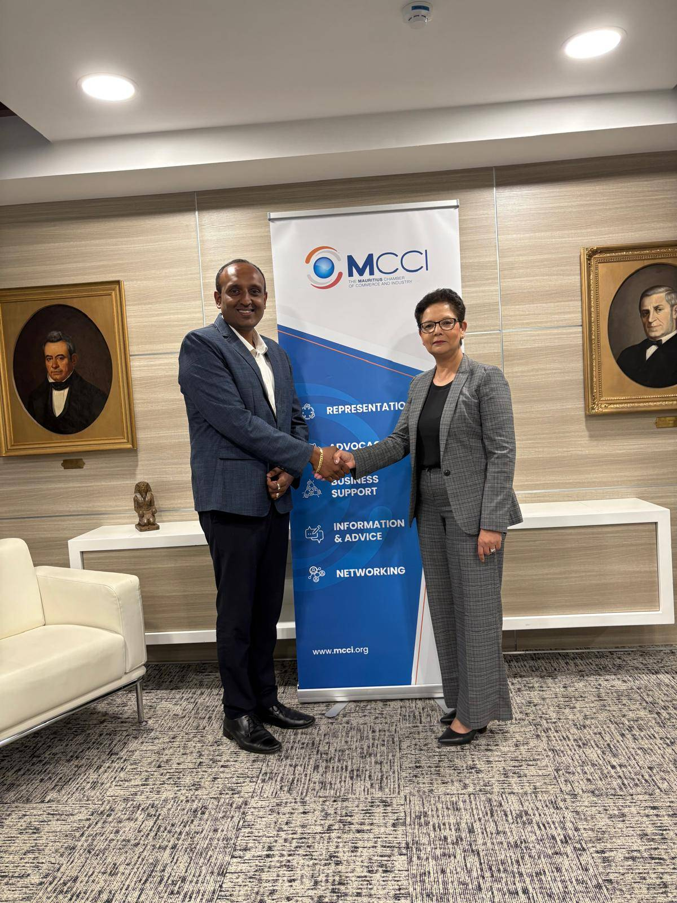

From Vision to Action — transforming the Canada-Mauritius relationship into active, structured economic partnership.
The Canada Mauritius Trade and Investment Venture was born from a simple yet powerful observation: two nations with deep historical ties, shared democratic values, and complementary economic strengths were significantly underutilizing their bilateral potential.
Launched in 2025, this Canada-based initiative represents a deliberate effort to transform passive goodwill into active economic partnership. It brings together business leaders, institutional partners, investors, entrepreneurs, and community stakeholders to build practical, sustainable bridges between Canadian and Mauritian markets.
Learn more about us
Several converging factors created the conditions for this initiative:
Creating structured spaces for Canadian and Mauritian stakeholders to share perspectives, identify challenges, and co-design solutions through business forums, sector-specific roundtables, and policy conversations.
Reducing friction in cross-border business development: regulatory navigation, market entry strategy, partnership matching, and cultural bridging.
Ensuring that opportunities, success stories, and partnership potential are visible to the right audiences in both markets. Many excellent prospects fail simply because the right people don't know they exist.
Moving beyond one-off events to sustained engagement. The Venture maintains relationships, tracks opportunities over time, and ensures that initial connections mature into concrete outcomes.
Formal launch of the Canada Mauritius Trade and Investment Venture with founding partners from financial services, technology, and diaspora business networks.
First exploratory business mission to Mauritius. Canadian delegates engaged with government representatives (Economic Development Board, Investment Promotion agencies), private-sector leaders in financial services, logistics and renewable energy, Canadian diaspora entrepreneurs, and educational institutions exploring academic partnerships.
Leadership structure formalized with Padminee Chundunsing as President and Founder, bringing decades of experience in cross-border business development and Francophone network building.
The Venture's network is intentionally diverse, connecting the key actors needed to make the bilateral relationship work in practice.
| Stakeholder | Role |
|---|---|
| Senior Decision-Makers | C-suite executives with authority to commit resources and pursue opportunities |
| Founders & Entrepreneurs | Agile innovators seeking market expansion and partnership |
| Institutional Partners | Banks, development agencies, academic institutions providing infrastructure |
| Strategic Advisors | Legal, regulatory, and cultural experts facilitating navigation |
| Diaspora Leaders | Community anchors with trust networks in both countries |

Whether you are a Canadian business exploring African markets, a Mauritian enterprise seeking North American partnerships, an investor looking for ESG-aligned emerging market opportunities, or a professional with expertise to contribute — there is a pathway for you to engage.